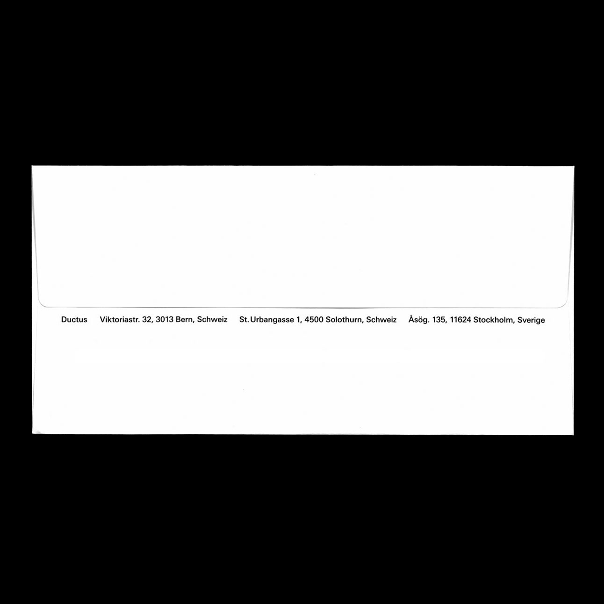
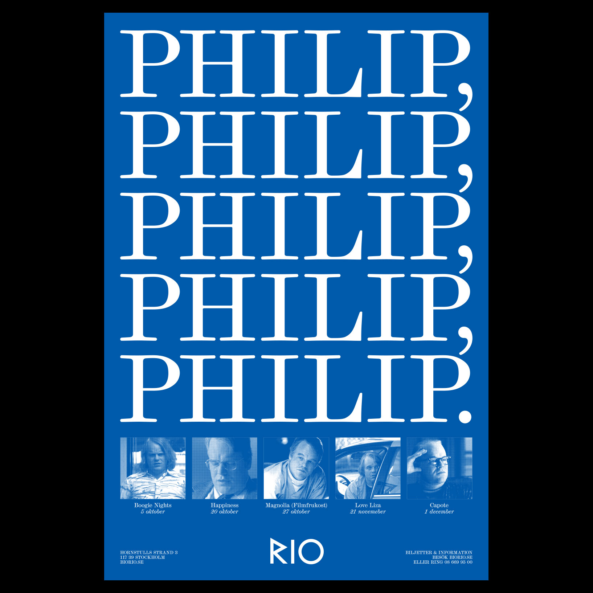

Ludvig Franzén
Concepts and ideas are expressed through a wide spectrum of disciplines: visual identities, products, installations, print, digital and more.
Previous experience as a designer at the London based studio OK-RM and as an art director at Google Creative Lab.
Currently based in Stockholm, running various projects, including the music label Study Records.
Golfvägen 12B, 134 64 Ingarö
+46708230208
me@ludvigfranzen.se